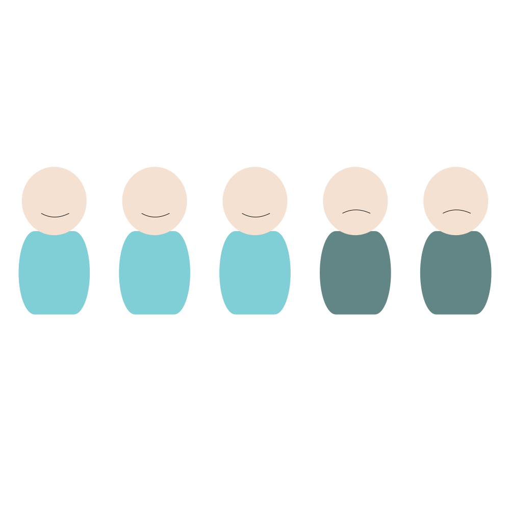

Tres herramientas de decisión
¿Qué puede hacer que un cliente deje nuestra compañía?, ¿Cuales son los mas propensos a hacerlo? ¿De que popularidad goza nuestra empresa? Estas son preguntas muy interesantes para el negocio, pero de difícil respuesta. Gracias a las nuevas tecnologías podemos plantearnos tres posibles soluciones que ayuden a arrojar un poco de luz sobre nuestra situación. Veamos breve mente como se han planteado cada una de ellas.

La segunda herramienta pasa por un planteamiento mas sencillo. ¿Por que no nos basamos en las conversaciones con nuestros clientes para saber cuales están contentos y cuales no? Esto es evidentemente una buena solución pero, hasta la fecha, hacía falta mucho personal para analizar las conversaciones. Hoy en día podemos aprovechar los nuevos algoritmos para detectar en que conversaciones se aprecia un malestar, y saber de este modo que cliente no esta contento con la compañía.

La primera aproximación consiste en basarnos en las características de nuestros clientes para detectar cuales serán mas propicios a dejarnos. Esto se hace mediante algoritmos que detectan patrones comparando clientes que han dejado la compañía y clientes que no la han dejado. De este modo podremos focalizar esfuerzos y tratar de mejorar nuestros servicios allí donde seguramente estén fallando.

La ultima herramienta nos ayudará a conocer la opinión publica de que goza nuestra empresa. Gracias a twitter podemos saber que es lo que la gente dice de nosotros. Podemos ver si la gente tiene una buena opinión de nosotros y compararlo con la competencia, detectando así cuando es mas probable que un cliente se plantee dejar la compañía. También podemos detectar cuales son los tópicos mas comunes para saber así que es lo que a la gente le preocupa.
Autor:
Álvaro Sánchez Castañeda.
Con la colaboración de:
Con la colaboración de: